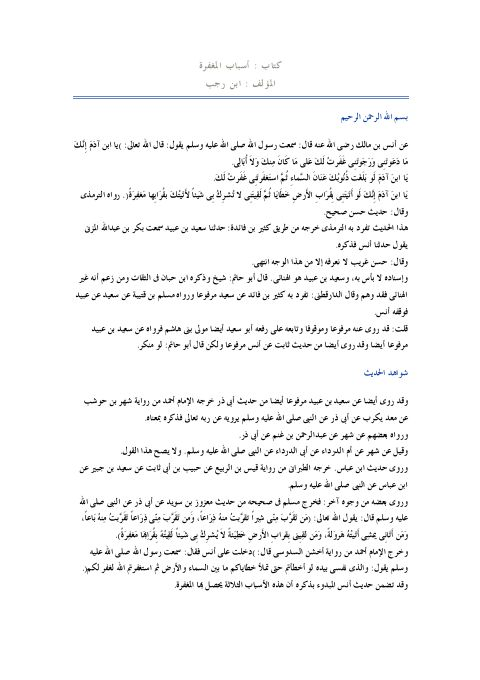

Downloads need an internet connection.
كتاب أسباب المغفرة
Authors: ابن رجب الحنبلي
**▫️ العنوان: كتاب أسباب المغفرة** ▪️ المؤلف: #عبد_الرحمن_البغدادي_بن_رجب_الحنبلي ▫️ الطبعة: 1 ▪️ عدد الأجزاء: 1 ▫️ الصفحات: 10 ▪️ نوع الوعاء: #بحث ▫️ التصنيف الرئيسي: #الحديث_وعلومه ▪️ التصنيف الفرعي: #بحوث_حديثية ۪